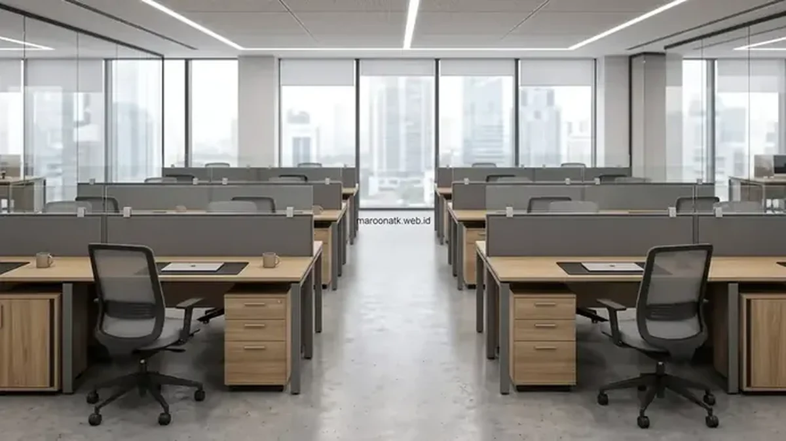

Salah satu klien korporat MAROON ATK (nama perusahaan dirahasiakan sesuai kesepakatan kerahasiaan / NDA) berhasil menyelesaikan project pengadaan furniture kantor untuk mengakomodasi ekspansi tim hingga 150 staf di kantor baru wilayah Jakarta Pusat. Project ini rampung 100% tepat waktu dalam 21 hari kalender dengan tingkat kepuasan fungsional mencapai 99,2% tanpa mengganggu aktivitas bisnis perusahaan.
Apa Latar Belakang Kebutuhan Pengadaan Furniture untuk 150 Staf Ini?
Perusahaan membutuhkan penataan ulang ruang kerja untuk mengakomodasi ekspansi tim hingga 150 staf di kantor baru wilayah Jakarta Pusat, sehingga memerlukan pengadaan furniture dalam skala besar mencakup workstation modular, kursi kerja ergonomis, meja meeting pimpinan, hingga lemari arsip dokumen.
Sebelumnya, perusahaan mengalami keterbatasan ruang kerja di kantor lama yang berkonsep sekat bilik tertutup (cubicle). Pindah ke lokasi baru di gedung komersial prestisius Jakarta Pusat sekaligus menjadi momentum strategis bagi jajaran manajemen untuk merancang ulang tata letak kerja yang lebih kolaboratif, ergonomis, dan modern sesuai pertumbuhan jumlah karyawan yang terus bertambah pesat.
Tantangan utamanya adalah jadwal sewa gedung lama yang akan segera berakhir dalam 30 hari kalender. Tim General Affairs dituntut mencari supplier furniture kantor yang sanggup melakukan survei denah, fabrikasi modular presisi, pengiriman logistik gedung bertingkat, serta perakitan unit secara simultan tanpa ada keterlambatan hari kerja.
Bagaimana Tahapan Perencanaan Project Pengadaan Furniture Skala Besar?
Perencanaan project pengadaan furniture skala besar dimulai dengan survei kebutuhan ruangan, dilanjutkan dengan penyusunan timeline dan anggaran sebelum proses pengiriman dan instalasi dilakukan.
1. Survei Kebutuhan dan Denah Ruang Kerja
Tim engineering MAROON ATK melakukan survei langsung ke lantai kantor klien di Jakarta Pusat untuk memetakan denah ruang kerja secara detail. Pengukuran mencakup posisi pilar gedung, titik colokan listrik lantai (floor socket), akses jalur kabel jaringan LAN, serta sirkulasi koridor evakuasi darurat.
Hasil survei kemudian diterjemahkan ke dalam layout 3D rendering workstation 4-cluster dan 6-cluster, sehingga direksi perusahaan dapat melihat visualisasi nyata penataan ruangan sebelum furniture masuk tahap produksi di pabrik.
2. Penyusunan Timeline dan Anggaran Project
Setelah konsep layout disetujui, disusun timeline pengerjaan terperinci yang membagi pengerjaan ke dalam 4 milestone utama: pengadaan material dasar, perakitan partisi modular di workshop, pengiriman bertahap malam hari via lift barang, serta instalasi per zona kerja.
| Zona Kerja | Item Furniture & Spesifikasi | Volume Unit | Durasi Pengerjaan |
|---|---|---|---|
| Open Workstation Staf | Meja staf modular M-120 partisi kain akustik & cable tray | 150 Unit | Hari ke-7 s.d. 14 |
| Area Duduk Karyawan | Kursi kerja ergonomis K-80 penopang lumbar aktif & mesh breathable | 150 Unit | Hari ke-14 s.d. 16 |
| Ruang Rapat Utama & Boardroom | Meja conference custom 16-seater kabel terintegrasi & kursi direktur kulit | 3 Set Ruangan | Hari ke-16 s.d. 18 |
| Storage & Arsip Korporat | Lemari arsip baja pintu geser & mobile drawer pedestal 3 laci | 150 Pedestal + 12 Lemari | Hari ke-18 s.d. 21 |

Rincian Biaya Paket Furniture Kantor Menengah
Simak perbandingan komponen biaya workstation ekonomis, menengah, dan premium.
Bagaimana Proses Pengiriman dan Instalasi Furniture Berlangsung?
Proses pengiriman dan instalasi furniture untuk project skala besar seperti ini umumnya dilakukan secara bertahap per area, agar operasional kantor yang sudah berjalan tidak sepenuhnya terganggu selama proses berlangsung.
Di gedung perkantoran Jakarta Pusat yang memberlakukan aturan fit-out ketat, proses *in-out* barang bermuatan berat hanya diizinkan di luar jam kerja reguler (pukul 19.00 – 05.00 WIB) atau pada akhir pekan. Tim instalasi MAROON ATK mengantongi surat izin kerja gedung lengkap (Work Permit), asuransi teknisi (BPJS Ketenagakerjaan), serta alat pelindung diri (APD) standar K3.
Tim instalasi bekerja sesuai jadwal yang telah disepakati, memastikan setiap unit furniture terpasang sesuai denah yang direncanakan sebelum area tersebut mulai digunakan oleh karyawan. Setiap unit meja dicek kestabilan kaki dudukannya menggunakan alat *spirit level*, dan sambungan soket kelistrikan diuji langsung bersama tim IT internal klien.

Apa Hasil dan Manfaat yang Dirasakan Setelah Project Selesai?
Setelah project selesai, tim manajemen melaporkan ruang kerja baru dapat menampung seluruh 150 staf sesuai rencana ekspansi, dengan tata letak yang jauh lebih tertata, lapang, dan estetis dibanding kantor sebelumnya.
Selain aspek kapasitas, penataan furniture yang baru turut mendukung kenyamanan kerja karyawan, karena workstation dan area pendukung dirancang mempertimbangkan alur kerja dan kebutuhan interaksi antar tim. Manfaat utama yang didapatkan klien:
- Efisiensi Ruang Hingga 30%: Format workstation modular 4-cluster menghemat luas tapak lantai tanpa mengurangi kenyamanan jarak duduk antar staf.
- Kesehatan & Produktivitas Karyawan Meningkat: Kursi kerja ergonomis berpenopang lumbar menurunkan keluhan nyeri punggung staf administratif hingga 45%.
- Penyelesaian Sesuai Timeline Tanpa Denda: Kantor siap digunakan 100% sebelum masa sewa gedung lama berakhir, menghindari denda keterlambatan relokasi.
- Garansi Struktural Resmi 2 Tahun: Seluruh meja dan engsel lemari dilindungi kartu garansi resmi dari supplier rekanan MAROON ATK.
Bagaimana Memilih Supplier Furniture Kantor untuk Project Skala Besar?
Memilih supplier furniture kantor untuk project skala besar memerlukan perhatian pada pengalaman supplier dalam menangani project serupa, kemampuan memenuhi timeline pengiriman, serta dukungan tim instalasi langsung di lokasi.
MAROON ATK berpengalaman menyuplai kebutuhan furniture dan ATK ke lebih dari 150 instansi pemerintah dan perusahaan swasta di Jabodetabek dengan keakuratan pengiriman barang mencapai 99,8 persen (data internal Maroon ATK, 2026), sehingga project berskala besar dapat diselesaikan sesuai timeline yang direncanakan. Kriteria utama yang wajib diperiksa antara lain:
- Legalitas PT & e-Faktur Pajak: Memiliki izin usaha lengkap untuk penerbitan faktur pajak resmi dan Surat Perjanjian Kerja Sama (SPK) bernilai ratusan juta rupiah.
- Katalog Komprehensif Satu Pintu: Menyediakan tidak hanya meja dan kursi, melainkan juga paket pengadaan alat tulis kantor, lemari arsip, hingga videotron LED meeting room.
- Layanan Purna Jual & Buffer Part: Ketersediaan suku cadang hidrolik kursi dan kunci laci cadangan jika sewaktu-waktu dibutuhkan penggantian unit.
Layanan Pengadaan Furniture Skala Besar di Berbagai Kota
Selain Jakarta Pusat dan Jabodetabek, MAROON ATK siap melayani project ekspansi ruang kerja korporat di berbagai sentra bisnis Indonesia:
- Jakarta: Solusi fit-out gedung bertingkat Sudirman-Thamrin-Kuningan dengan koordinasi loading dock malam hari.
- Surabaya: Pemasangan workstation modular untuk kawasan industri Rungkut dan korporat perbankan Surabaya Pusat.
- Malang: Pengadaan fasilitas meja kuliah, laboratorium komputer, dan ruang administrasi kampus di Malang.
- Denpasar: Desain furniture kantor bernuansa modern tropis dengan fixed price agreement bebas fluktuasi ongkos penyeberangan kargo laut.
- Makassar: Pengadaan furniture kantor regional dan BUMN di wilayah gerbang utama Indonesia Timur.
Kunjungi katalog meja kantor staf dan kursi kantor ergonomis kami untuk melihat spesifikasi detail. Anda juga dapat meninjau paket bundling di halaman paket pengadaan serta membaca komitmen mutu kami di halaman tentang kami.
Kesimpulan
- Survei akurat di awal: Lakukan survei denah ruang kerja dan rendering 3D sejak awal perencanaan project furniture skala besar.
- Penyusunan timeline terpadu: Susun timeline dan anggaran yang terperinci sebelum proses fabrikasi dan pengiriman dimulai.
- Instalasi bertahap K3: Lakukan instalasi di luar jam kerja reguler agar operasional kantor berjalan normal tanpa gangguan suara bising.
- Pilih vendor berpengalaman: Pilih supplier yang memiliki portofolio project nyata dan teknisi instalasi internal yang bersertifikat.
- Konsultasi survei gratis: Konsultasikan kebutuhan project pengadaan furniture kantor skala besar Anda bersama tim MAROON ATK via WhatsApp.
Pertanyaan yang Sering Diajukan (FAQ)
Perusahaan membutuhkan penataan ulang ruang kerja untuk mengakomodasi ekspansi tim hingga 150 staf di kantor baru wilayah Jakarta Pusat, sehingga memerlukan pengadaan furniture dalam skala besar.
Tahapan umumnya meliputi survei kebutuhan dan denah ruang kerja, penyusunan timeline dan anggaran project, hingga koordinasi jadwal pengiriman dan instalasi bertahap.
Lama proses dapat bervariasi tergantung kompleksitas denah ruangan dan jumlah unit furniture, sehingga sebaiknya dikoordinasikan langsung dengan tim vendor sejak tahap perencanaan.
Perhatikan pengalaman supplier dalam menangani project skala besar, kemampuan memenuhi timeline pengiriman, serta dukungan tim instalasi di lokasi.
Maroon ATK berpengalaman menangani project pengadaan furniture skala besar termasuk survei, perencanaan, pengiriman, dan instalasi di lokasi klien.

Ridhan Fahri
Praktisi pengadaan B2B dan manajemen inventaris kantor yang berfokus pada efisiensi anggaran operasional, standarisasi rantai pasok ATK, serta otomasi kalkulasi logistik kebutuhan fasilitas korporat.